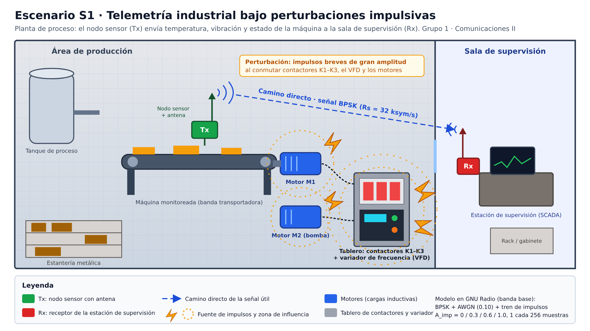
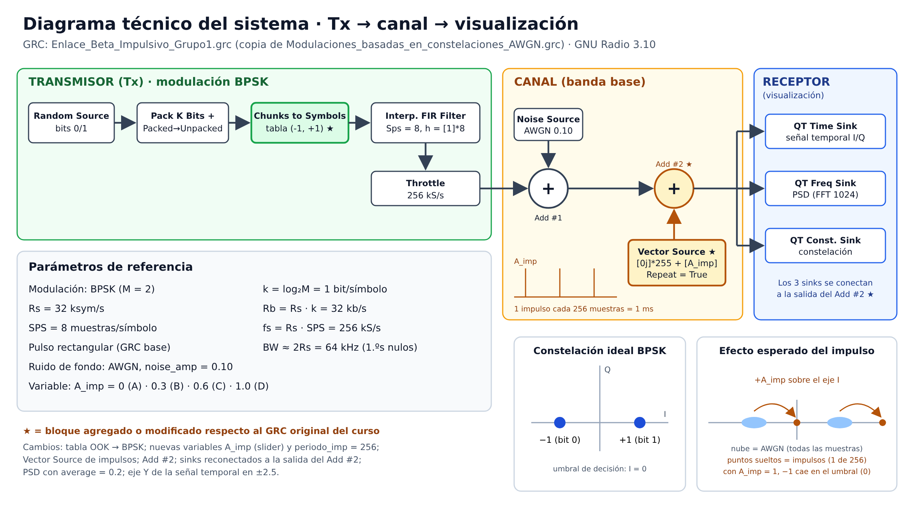
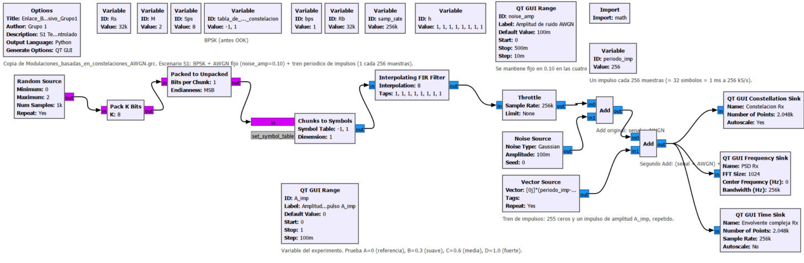
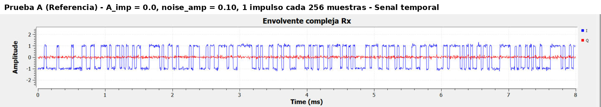
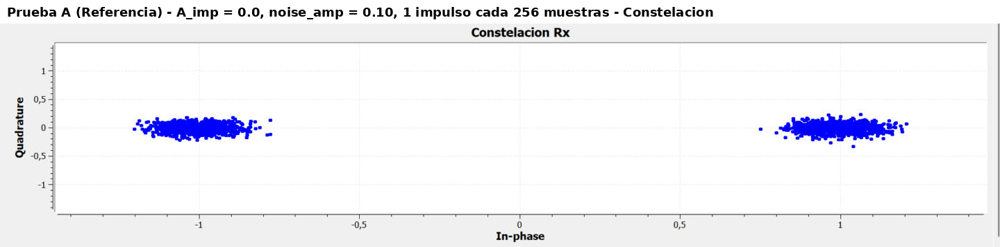
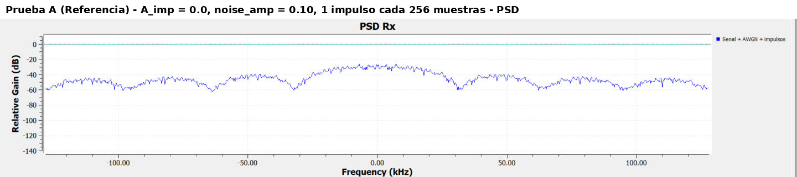
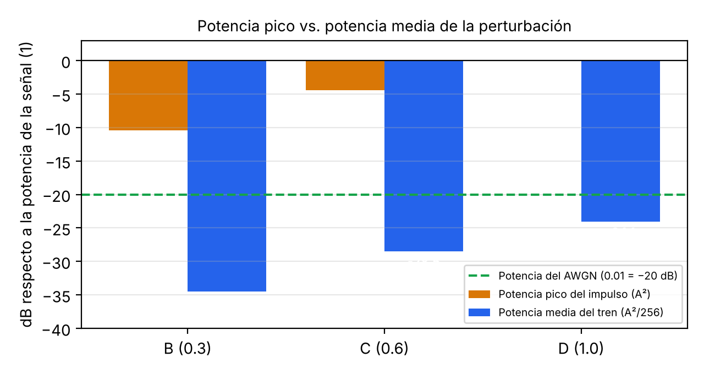

InicioPregunta guía

BPSKRs = 32 ksym/sfs = 256 kS/sAWGN 0.101 impulso cada 256 muestras
Escenario y problemaTelemetría en una planta ruidosa
Una planta de proceso tiene un nodo sensor sobre una banda transportadora que envía datos lentos —temperatura, vibración y estado de la máquina— a la estación de supervisión. Al lado están los motores M1 y M2, un tablero con contactores y un variador de frecuencia. Cada vez que algo conmuta, se produce un pico eléctrico muy corto y muy fuerte.
Ese es el fenómeno físico que nos interesa: el ruido impulsivo. No se comporta como el ruido blanco gaussiano (AWGN), que está presente todo el tiempo y afecta un poco cada muestra. El ruido impulsivo afecta muy pocas muestras, pero mucho. Las mediciones en interiores señalan como fuentes principales a los equipos con interruptores electromecánicos y a los motores [1], [4]. Además, la estadística de esa interferencia no es gaussiana [2].
En la figura se ven el espacio físico, el mobiliario, el Tx y el Rx con sus antenas, el camino directo de la señal y la zona de influencia de cada fuente de impulsos.
Diseño técnicoModulación, parámetros y ancho de banda
Escogimos BPSK. La telemetría es lenta, así que no necesitamos más bits por símbolo; necesitamos que la señal aguante. Con la misma amplitud, BPSK deja los dos símbolos (−1 y +1) lo más separados posible. Descartamos OOK/ASK porque guarda la información en la amplitud, que es justo lo que alteran los impulsos. Descartamos QPSK y 16QAM porque dan más tasa de la necesaria a costa de acercar los símbolos.
| Parámetro | Valor | Relación |
|---|---|---|
| Bits por símbolo | k = 1 | k = log₂ M, con M = 2 |
| Tasa de símbolos | Rs = 32 ksym/s | valor de referencia del curso |
| Tasa de bits | Rb = 32 kb/s | Rb = Rs · k |
| Muestras por símbolo | SPS = 8 | valor de referencia |
| Tasa de muestreo | fs = 256 kS/s | fs = Rs · SPS |
| Ancho de banda | ≈ 64 kHz | ≈ 2Rs entre primeros nulos (pulso rectangular) |

GNU RadioQué cambiamos en el flujograma
Partimos de Modulaciones_basadas_en_constelaciones_AWGN.grc, que entregó el curso, y guardamos una copia como Enlace_Beta_Impulsivo_Grupo1.grc. El original se conserva sin cambios en el repositorio.
- Chunks to Symbols: la tabla pasó de OOK
(0, 1)a BPSK(-1, 1). - Variables nuevas:
periodo_imp = 256y un sliderA_impentre 0 y 1. - Vector Source (Complex):
[0j]*255 + [A_imp]con Repeat = True. Genera 255 ceros y un impulso, una y otra vez. Un impulso cada 256 muestras equivale a 1 ms, o sea cada 32 símbolos. - Segundo Add: suma ese tren de impulsos a la salida del Add original (señal + AWGN).
- Sinks: tiempo, PSD y constelación ahora leen la salida del segundo Add, así muestran la señal realmente degradada.

Experimentos y resultadosCuatro pruebas, una sola variable
Mantuvimos fijos Rs, SPS, fs, la modulación y el AWGN (0.10). Solo cambiamos la amplitud del impulso.
| Prueba | A_imp | Señal temporal | Constelación | PSD |
|---|---|---|---|---|
| A · Referencia | 0.0 | sin picos | dos nubes en ±1 | sinc², nulos en ±32/64/96 kHz |
| B · Suave | 0.3 | picos ≈ 1.3 cada 1 ms | puntos sueltos en ≈ −0.7 y 1.3 | sin cambio apreciable |
| C · Media | 0.6 | picos ≈ 1.6 | puntos sueltos en ≈ −0.4 y 1.6 | sin cambio apreciable |
| D · Fuerte | 1.0 | picos ≈ 2 | puntos sueltos en ≈ 0 y 2 | casi igual; nulos menos profundos |
Mira cada prueba



Análisis
¿El impulso aparece claramente en el tiempo? Sí. Es lo primero que se ve: en la ventana de 8 ms aparecen 8 picos, uno por milisegundo. Solo salen en la componente I porque el impulso que sumamos es real. En la prueba D los picos llegan a 2, el doble del nivel normal del símbolo.
¿Y en la constelación? El AWGN abre cada símbolo en una nube. Los impulsos hacen otra cosa: dejan unos pocos puntos aislados, 1 de cada 256 muestras, corridos exactamente +A_imp sobre el eje I. Con A_imp = 1, los puntos que venían de −1 caen en 0, justo en el umbral de decisión.
¿Por qué la PSD casi no cambia? Fue lo que más nos sorprendió. Cada impulso es fuerte: en D tiene la misma potencia instantánea que la señal. Pero solo dura una muestra de cada 256, así que la potencia media del tren es A²/256: −34.5, −28.5 y −24.1 dB para B, C y D. Eso es menos que el AWGN (−20 dB). Encima, un impulso tiene espectro plano y reparte esa potencia en toda la banda. Como la PSD es un promedio, esconde justamente lo que caracteriza al ruido impulsivo.

¿Habría errores? Si se decidiera con la muestra afectada, en D el resultado sería al azar. Pero un receptor con filtro acoplado promedia las 8 muestras del símbolo, así que un impulso de una sola muestra solo mueve la decisión A_imp/8 = 0.125. La robustez depende también del receptor, no solo de la modulación.
MultimediaGalería y video


Video de socialización
Bitácora y aprendizajeLo que fuimos decidiendo
| Fecha | Qué hicimos | Decisión o dificultad |
|---|---|---|
| 8 oct | Lectura de la guía; el docente nos asigna S1. | Entender que el problema no es la tasa sino la robustez. |
| 15 oct | Ficha "Decisión Técnica Ciega". | BPSK, GRC con AWGN, parámetros de referencia, variable: amplitud del impulso. |
| 24 oct | Construcción del GRC y pruebas A–D. | Los sliders usan coma decimal (0,3) por la configuración de Windows. La rueda del mouse sobre la PSD hace zoom y cambia la escala; usamos la barra de desplazamiento y reiniciamos el flowgraph para recuperarla. |
La bitácora completa está en docs/bitacora.md.
Reflexión metacognitivaQué aprendimos
(Borrador para que el grupo lo ajuste con sus propias palabras.)
Antes del proyecto pensábamos que cualquier ruido se vería en la PSD. Aprendimos que la PSD muestra potencia promedio y que un fenómeno raro pero fuerte puede pasar casi desapercibido ahí, aunque en el tiempo sea evidente. También entendimos por qué la guía insiste en cambiar una sola variable: como solo movimos A_imp, pudimos atribuir cada cambio a los impulsos y no a otra cosa.
Si lo hiciéramos de nuevo, agregaríamos un receptor con filtro acoplado y mediríamos la BER, para pasar de "se ve feo" a "hay tantos errores". En una siguiente versión profundizaríamos en impulsos con llegada aleatoria y en comparar BPSK con BFSK bajo las mismas condiciones.
Uso de IA y herramientasCómo trabajamos
| Herramienta | Para qué | Validación humana |
|---|---|---|
| GNU Radio 3.10.12 (radioconda) | Simulación y capturas. | Todas las capturas salen de nuestra ejecución. |
| Asistente de IA (Claude, de Anthropic) | Apoyo para organizar el repositorio, armar el GRC modificado, dibujar las figuras del escenario y redactar borradores del informe y del blog. | Revisamos los parámetros contra la guía y el GRC original, ejecutamos el GRC y comprobamos que los resultados coinciden con lo calculado (por ejemplo, la posición +A_imp de los puntos y A²/256). |
| Python (NumPy, Matplotlib) | Gráfica de síntesis de potencias. | Cálculo verificado a mano con A²/256. |
ReferenciasFuentes (formato IEEE)
[1] K. L. Blackard, T. S. Rappaport y C. W. Bostian, “Measurements and models of radio frequency impulsive noise for indoor wireless communications,” IEEE J. Sel. Areas Commun., vol. 11, no. 7, pp. 991–1001, 1993.
[2] D. Middleton, “Statistical-physical models of electromagnetic interference,” IEEE Trans. Electromagn. Compat., vol. EMC-19, no. 3, pp. 106–127, 1977.
[3] M. Zhan, Z. Pang, D. Dzung, K. Yu y M. Xiao, “Short-packet interleaver against impulse interference in practical industrial environments,” arXiv:2203.00770, 2022. Enlace
[4] K. L. Blackard, “Measurements and models of radio frequency impulsive noise inside buildings,” tesis de maestría, Virginia Tech, 1991. Enlace
[5] J. G. Proakis y M. Salehi, Digital Communications, 5.ª ed. McGraw-Hill, 2008.
[6] GNU Radio Project. https://www.gnuradio.org
InteracciónDéjanos tu comentario
¿Una pregunta, una corrección o una idea para la siguiente versión? Abre un comentario en el repositorio: